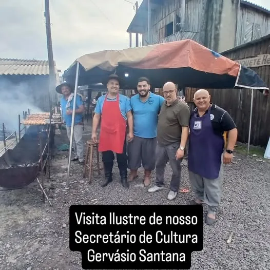
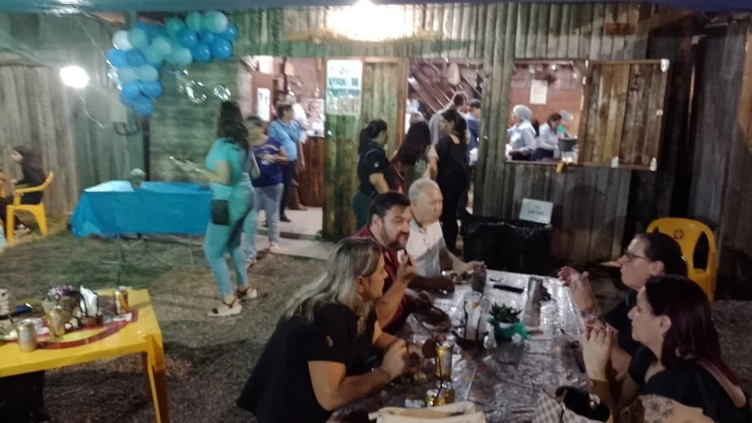

Programas · Ação social
Galeto Solidário
Um almoço que alimenta a tradição e ajuda quem precisa.
O que é
A principal ação social recorrente
O Galeto Solidário é um almoço comunitário de galeto, prato típico gaúcho, que une cultura, mobilização e solidariedade. A cada edição, dezenas de voluntários cuidam do preparo à brasa, da venda e do atendimento.
Parte da renda é revertida a entidades assistenciais de Sapucaia do Sul, como a Cruz Vermelha, a ACAPASS e o Lar Abrigo Meu Refúgio. A primeira ação nesse formato, em 2021, foi em prol da ACAPASS. As edições mais recentes contam com a parceria do grupo União Solidária, que leva comida a moradores de rua da cidade.
Em 2026, o Galeto chegou à 11ª edição, dessa vez em prol da obra da sede própria do Tropilha.
Em números
Ago/2024 a ago/2026


Informações
Como participar
- Frequência
- Semestral
- Retirada
- Galpão Campeiro do Tropilha, Parque Jayme Caetano Braum, ou Salão da Igreja Luterana, conforme a edição
- Reservas
- Pelo WhatsApp (51) 98088-1334
- Entidades apoiadas
- Cruz Vermelha, ACAPASS, Lar Abrigo Meu Refúgio e outras entidades do município
Reserve o seu
Fale com a gente
Informações, inscrições e voluntariado pelo WhatsApp (51) 98088-1334 ou pelo e-mail gtftropilhacrioula@gmail.com.